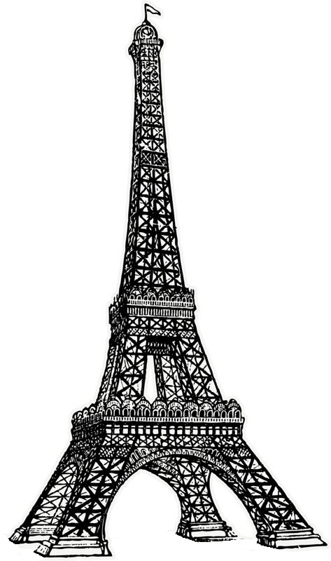

MODELE
" Ne cherchez pas des gens qui vous donnent des conseils ; regardez plutôt ceux qui vous donnent des exemples. " Sacha GUITRY

Des modèles de réussite, nous en avons tous. Avez-vous déjà remarqué qu'ils sont généralement porteurs de ce qui est important pour nous, nos valeurs qu'ils partagent et représentent.
Modéliser, c'est s'interroger sur le "comment" ces modèles ont accédé à cette expressivité, cette matérialisation tant dans l'acte que la vision du monde qu'ils proposent et qui vous attire. Un pan de notre culture sociétale, individualiste, ne veut pas tenir compte de la modélisation des atouts des autres. Mais en quoi, s'inspirer de l'expérérience d'autrui et du fruit de celle-ci est limitant ? Bien au contraire, gagnons du temps en adaptant les capacités de chacun à soi. C'est une autre façon de dire que les modèles que nous faisons du monde qui nous entoure à l'aide de notre cerveau et de notre langage ne sont pas le monde lui-même mais des représentations du monde.
Idéalisme, utopie ou stratégie, dans tous les cas, modéliser n'est pas singer.
En fait, la modélisation à travers la Programmation Neuro Linguistique (P.N.L.) a débuté lorsque Richard Bandler et John Grinder ont modélisé des patterns de langage et de comportement à partir du travail de Fritz Perls (le fondateur de la Gestalt thérapie), de Virginia Satir (une fondatrice de la thérapie familiale et de la thérapie systémique) et du Dr. Milton H. Erickson (fondateur de la société Américaine d'Hypnose Clinique). Les premières "techniques" de modélisation provenaient des patterns clés, verbaux et non verbaux, que Grinder et Bandler avaient observés dans le comportement de ces thérapeutes d’exception. Ils relevaient que ce qui semblait magique et inexplicable avait souvent une structure plus profonde qui, une fois élucidée, pouvait être comprise, communiquée et mise en pratique par d'autres.
La modélisation est le processus par lequel les morceaux pertinents de comportements d'une personne sont organisés en un modèle fonctionnel.
Modéliser, c'est s'interroger sur le "comment" ces modèles ont accédé à cette expressivité, cette matérialisation tant dans l'acte que la vision du monde qu'ils proposent et qui vous attire. Un pan de notre culture sociétale, individualiste, ne veut pas tenir compte de la modélisation des atouts des autres. Mais en quoi, s'inspirer de l'expérérience d'autrui et du fruit de celle-ci est limitant ? Bien au contraire, gagnons du temps en adaptant les capacités de chacun à soi. C'est une autre façon de dire que les modèles que nous faisons du monde qui nous entoure à l'aide de notre cerveau et de notre langage ne sont pas le monde lui-même mais des représentations du monde.
Idéalisme, utopie ou stratégie, dans tous les cas, modéliser n'est pas singer.
En fait, la modélisation à travers la Programmation Neuro Linguistique (P.N.L.) a débuté lorsque Richard Bandler et John Grinder ont modélisé des patterns de langage et de comportement à partir du travail de Fritz Perls (le fondateur de la Gestalt thérapie), de Virginia Satir (une fondatrice de la thérapie familiale et de la thérapie systémique) et du Dr. Milton H. Erickson (fondateur de la société Américaine d'Hypnose Clinique). Les premières "techniques" de modélisation provenaient des patterns clés, verbaux et non verbaux, que Grinder et Bandler avaient observés dans le comportement de ces thérapeutes d’exception. Ils relevaient que ce qui semblait magique et inexplicable avait souvent une structure plus profonde qui, une fois élucidée, pouvait être comprise, communiquée et mise en pratique par d'autres.
La modélisation est le processus par lequel les morceaux pertinents de comportements d'une personne sont organisés en un modèle fonctionnel.
La P.N.L. et l'hypnose ont développé des techniques et des distinctions avec lesquelles on peut identifier et décrire les modèles du comportement verbal et non verbal des gens, c'est-à-dire des aspects clés de ce que les gens disent et font. Les objectifs de base consistent à modéliser des capacités spéciales ou exceptionnelles et de faire en sorte qu'elles soient transférables à d'autres personnes. Le but de ce type de modélisation est de mettre ce qui a été observé et décrit en pratique de façon productive et enrichissante.
La plupart des processus de modélisation se focalisent sur le niveau des capacités, celui du "comment faire". Les capacités connectent les croyances et les valeurs et ont des comportements spécifiques. Sans le "comment", savoir ce que l'on est supposé faire et même pourquoi il faut le faire, est tout a fait vain. Les capacités et les compétences fournissent les liens et la force de levier pour manifester notre vision, notre identité, nos valeurs et nos croyances sous forme d'action.
L'hypnose et la P.N.L. nous connectent à la faisabilité de modéliser nos références externes et ce que nous souhaitons en tirer afin de devenir notre propre mentor.
La plupart des processus de modélisation se focalisent sur le niveau des capacités, celui du "comment faire". Les capacités connectent les croyances et les valeurs et ont des comportements spécifiques. Sans le "comment", savoir ce que l'on est supposé faire et même pourquoi il faut le faire, est tout a fait vain. Les capacités et les compétences fournissent les liens et la force de levier pour manifester notre vision, notre identité, nos valeurs et nos croyances sous forme d'action.
L'hypnose et la P.N.L. nous connectent à la faisabilité de modéliser nos références externes et ce que nous souhaitons en tirer afin de devenir notre propre mentor.
EN RELATION
AFFIRMATION
VISION
CONFIANCE
IDENTITE
PROJET
COMMUNIQUER